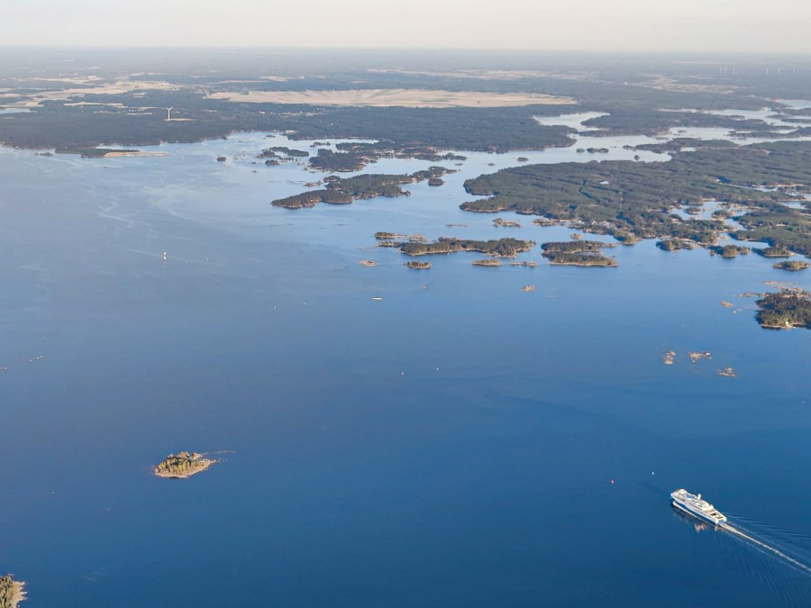
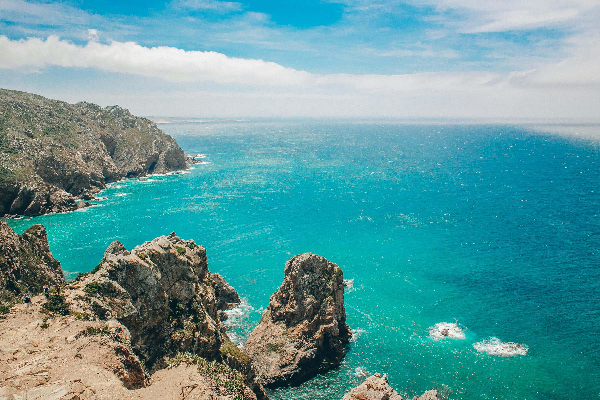
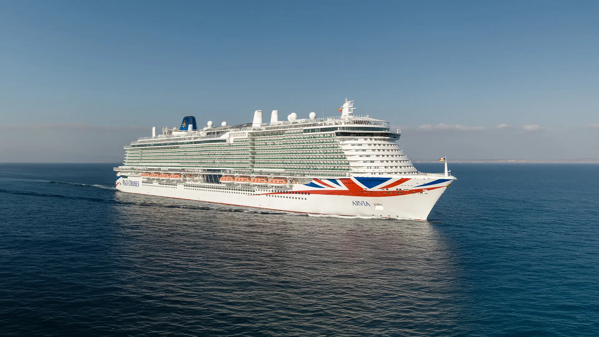

Kuvagalleria mereltä
Tässä kuvagalleriassa on kuvia mereltä Vaasan edustalla.
Kuvat esittelevät maisemia ja Wasaline-alusta.

Tiedostoformaatti: JPG, tiedostokoko: 84.5 kB

Tiedostoformaatti: PNG, tiedostokoko: 312 kB

Tiedostoformaatti: WebP, tiedostokoko: 146 kB
 Tiedostoformaatti: AVIF, tiedostokoko: 104 kB
Tiedostoformaatti: AVIF, tiedostokoko: 104 kB
 Tiedostoformaatti: SVG, tiedostokoko: 12 kB
Tiedostoformaatti: SVG, tiedostokoko: 12 kB